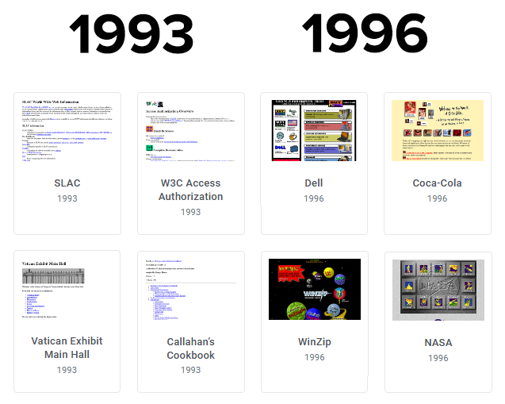
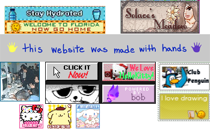
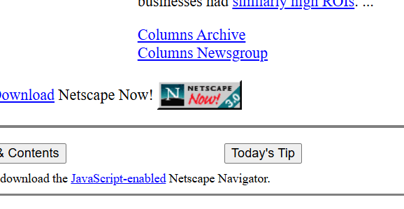
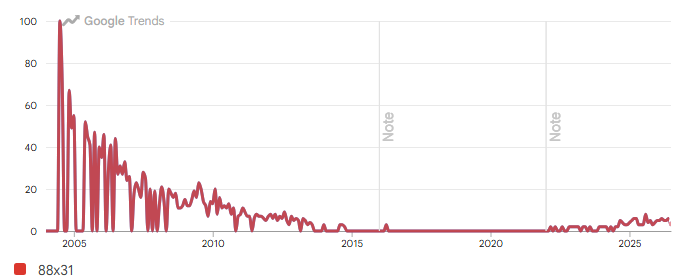
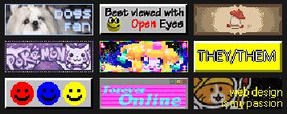
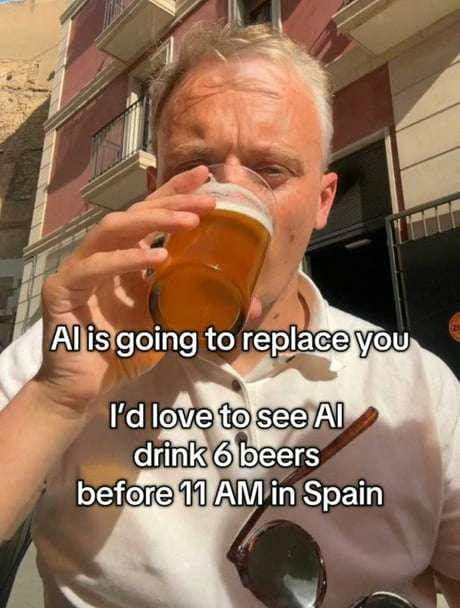
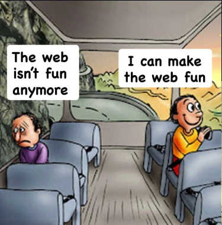
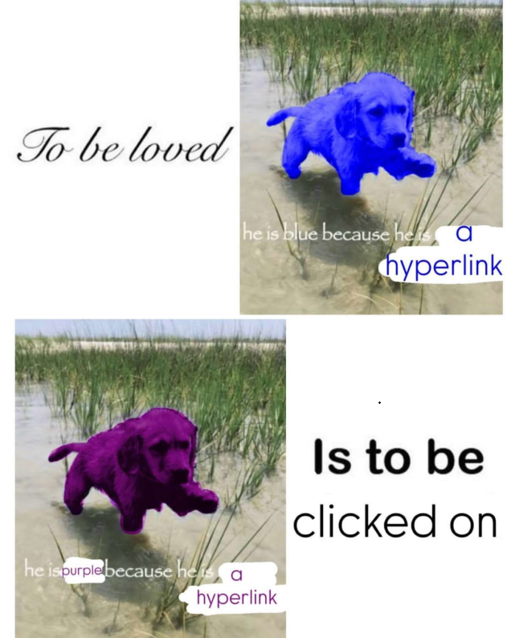
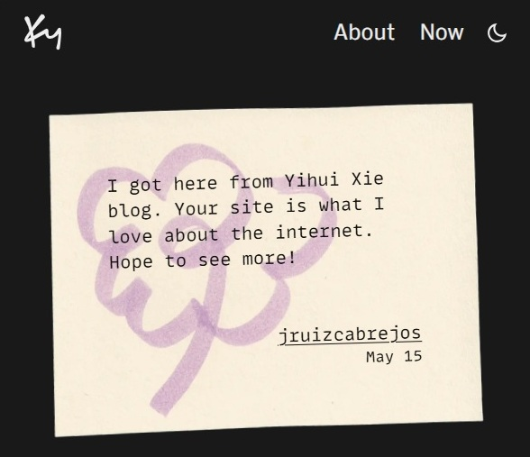

This story begins with me, once again, completely lost in the World Wide Web, “surfing the internet” 11 According to Hobbes’ Internet Timeline, the term ’net-surfing’ was used as early as 1991. An experience that, I am afraid, is becoming increasingly rare in a centralized web shaped by algorithms 22 Algorithmic-driven social media favor the emergence of echo chambers, with only a few comparable activities33 Is doomscrolling a modern way of internet surfing? still thriving today, such as getting lost in a Wikipedia rabbit hole.
I no longer remember what I was looking for, but somehow I ended up at Yihui Xie’s44 Very well known developer in the R community, and author of many open-source tools for reproducible coding and dynamic reporting personal website, where I read his personal thoughts on AI-assisted programming.
Addiction aside, in his post, he described feelings I have become all too familiar with, after having myself gone through the experience of building my first slop-driven app.
In his post, two things caught my attention:
- A reference to a blog post written by Ky Decker, where he questions whether he belongs in “tech” anymore.55 ’ Do we still belong anywhere, anyways? '
- The idea of HaaS (Humor as a Service).
This post of mine is the result of exploring these two points.
88x31 buttons
The 1990s Internet saw the rise of the browser-based web navigation we know of today, thanks to developments that made it possible, and much easier, to display color, and eventually, in-line images.
Before the popularization and widespread adoption of browsers like Mosaic (1993-1997) and Netscape (1994-2008), most websites were made purely out of text.

At this point in time, Google (1998-present) had not yet achieved absolute hegemony yet (and web crawlers still had lots of room for improvement), so in order to discover new pages, it was common for websites to have multiple related hyperlinks so visitors could jump66 surf, and connect, between them.
Access to colors and images within browsers during the mid-90’s led to an explosion of web design and personal expression. Importantly, it meant that text hyperlinks could now be served as highly personalized “visual buttons"77 badges? blinkies? stamps? icons? banners? they are called in many different ways..

Among these, the 88px wide by 31px high button standard (88x31) is one of the most enduring formats.
Its origin story on how it came to be seems somewhat unclear. Trying to understand it has already taken some hours of my life, and there might be a lot more to document about it88 Was it Netscape that started it all? Or was it GeoCities? I am unsure. is there a primary source in the room with us? Here is an analysis of 88x31 buttons from GeoCities. Nevertheless, the most widely known 88x31 button 99 And oldest recorded, until proven otherwise at some point became the “Netscape button”.

The design of many buttons from this era share the same features:
- Background: Grey (Hex:
#C0C0C0) - Border: 2px wide with a ‘bevel-edge 3D effect’
- Size: 88x31 pixels
Optionally, it could have logos, some text, and/or epilepsy-inducing flashing effects & colors.
The popularity of the 88x31 button peaked and faded. With the rise of the web 2.0, it gradually vanished alongside GeoCities (1994-2009), a now defunct free service to host personal websites1010 Blogpost, Wordpress, are all examples of this type of service.
But now, after a decade in disuse, the 88x31 buttons seem to be having a resurgence, fueled by Neocities (2013-present), the spiritual successor to GeoCities.

When I first visited Ky Decker’s website, at first I thought to myself:
This is a cool website. I hope to have something like this one day
Then, I saw his button collection.
It was an aesthetic I hadn’t seen in many years. I recognized it. It felt oddly nostalgic. And yet, I had either completely forgotten about it, or perhaps I never experienced it in the first place. Until now.

My personal website definitely needs some buttons
And with that, I began my search for the tools to do so.
Perfection is the enemy of the good, and the good is the enemy of the slop
I like to think that I am resisting the adoption of AI the best I can. However, I have to admit that at some point between 2025 and 2026, the LLM chat assistants started to outperform me in some coding aspects.
“You can’t choose when it hits you“1111 Taken from one of Michael Dumontier (b. 1974) and Neil Farber (b. 1975) artworks., and one day, frustrated with ggplot21212 ggplot2 is a R package for declaratively creating graphics, based on The Grammar of Graphics., for the first time since 2022, it hit me. The big machine was finally able to give me a workaround for a piece of code I had spent hours struggling with that made me say:
holy shit AI might actually take my joboh, ok, that is cool.

Right now (2026), I still wouldn’t use LLM’s for writing. I still want to feel whatever this is. I also refuse to generate AI images, videos, or sounds1313 Because that ain’t music.. I don’t let any AI or LLM touch the scripts I write for data analysis either.
But what about a minor bug in the 5-line function I wrote? What about the plot to visualize data that I have already pictured in my mind, and that I know how to code, but that I also know will take some time to get right?
Is there really a grey area?1414 ‘not by AI’ rule is 90% made by human 10% by AI Is what I do “code generated by AI”? Or “code assisted by AI”? Where does technological aid stops and intellectual deterioration begins? And, does it make any meaningful difference? 1515 Is there such thing as ethical consumption under capitalism? I don’t think so.
The writing here is all mine, as well as any idea I develop. Any further customization I code into this website, or any other code I work with, was also inspired by my own lived experiences, for now.
While searching for different 88x31 buttons (and the means to make them) it became clear that many out there building beautiful handmade digital gardens vehemently oppose any form of coding that involves AI1616 In some cases, the same people that aggresively oppose AI won’t share their code publicly either; sus, but I digress.
Sam Altman once said that AI might lead to the end of the world, but in the meantime we will have some great companies 1717 video. I want to think that AI won’t totally destroy humanity, or the world. If anything, it might destroy a good chunk environment.
In the meantime, at least we should get some fun out of it, I guess.

I want to contribute my own share of fun and laughs. Is this what Yihui Xie meant when he mentions Humor as a Service (HaaS)? I don’t know.
Unlike “Chat LLMs“, which to me are glorified search engines that occasionally help me debug a line or two of code, “Agentic LLMs” seem to be equipped with extensive software development capabilities.
It is with the latter that, taking inspiration from several other 88x31 button makers and generators out there, I adapted my own for my needs.
Colophon
How much fun is there in the universe? Will we ever run out of fun? Are we having fun yet? Could we be having more fun?
These are some interesting questions I would like to measure one day1818 Probably impossible to do so, but my brain can’t help wondering….

I already have a “Hello World” page, explaining how this website came to be. Maybe I need a “Colophon” page now, for me to detail how and where AI is used by me, if ever.
Further reading
Nowadays you don’t even have to go down the Wikipedia rabbit hole yourself. You can follow someone who does it for you.
- Beyond the Scroll: How Social Media Algorithms Shape Your Reality: https://towardsdatascience.com/beyond-the-scroll-how-social-media-algorithms-shape-your-reality/
- “The right-time web”: https://journals.sagepub.com/doi/10.1177/1461444820913560
- Netmom Jean Armour Polly personal website: https://www.netmom.com/surfing/birth-of-a-metaphor
Footnote
I began writing this blog entry on May 15th, 2026.
By coincidence, I finished writing it on August 1st, 2026, the day of the World Wide Web.

Comments